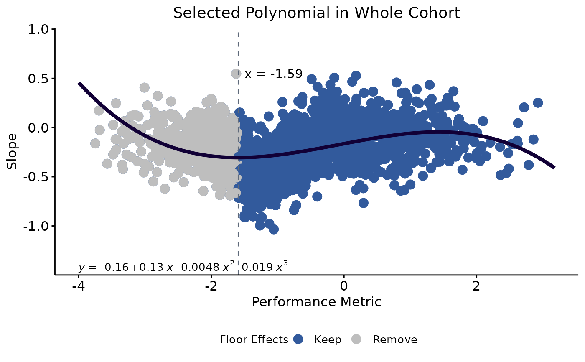

Plot selected models from final_data tibble output from the longpoly::implement_polynomial() function
plot_polynomial.RdPlot selected models from final_data tibble output from the longpoly::implement_polynomial() function
Usage
plot_polynomial(
data,
performance_metric = "mean",
order = 3,
x_label = "Performance Metric",
y_label = "Slope",
line_width = 1.5,
point_size = 3.5,
whole_cohort_point_color = "#325a9c",
whole_cohort_line_color = "#110036",
whole_cohort_title = NULL,
whole_cohort_only = TRUE,
train_id = NULL,
test_id = NULL,
train_point_color = "#430C33",
train_line_color = "#7B115B",
train_title = NULL,
test_point_color = "#113B19",
test_line_color = "#7B115B",
test_title = NULL,
show_equation = TRUE,
keep_remove = FALSE,
threshold = NULL,
threshold_linetype = "dashed",
threshold_line_color = "#5f6a7a",
x_offset = 0.25,
y_offset = 0.35,
title_text_size = 14,
axis_text_size = 12,
remove_point_color = "grey",
annotate_floor_thresh = FALSE,
legend_position = "none",
legend_title = "Floor Effects",
legend_title_size = 10,
legend_text_size = 10,
floor_keep_label = "Keep",
floor_remove_label = "Remove"
)Arguments
- data
the
final_datatibble output from thelongpoly::implement_polynomial()- performance_metric
which measure of performance is being used? Must be either "mean" (in which case performance_mean column must be in data) or "baseline" (data must contain performance_bl). Default =
"mean"- order
the order of the polynomial model (recommended to be selected on the scree plot output from
longpoly::test_polynomial()). default =3- x_label
a character vector to optionally change the x axis label. default = "Mean Performance"
- y_label
a character vector to optionally change the y axis label. default = "Slope"
- line_width
the width of the line reflecting the polynomial equation. default =
1.5- point_size
the size of the individual data points. default =
3.5- whole_cohort_point_color
optionally set the color of the points in the whole cohort plot
- whole_cohort_line_color
optionally set the color of the line in the whole cohort plot
- whole_cohort_title
optionally set the title of the whole cohort plot. default =
NULL- whole_cohort_only
should only the whole cohort plot be generated? if
FALSE, plots showing the train/test performance inlong_poly::test_polynomial()for the selected order are returned. default =TRUE- train_id
a vector of containing the IDs of observations allocated to the training dataset (recommended to use
train_idsoutput fromlong_poly::test_polynomial())- test_id
a vector of containing the IDs of observations allocated to the test dataset (recommended to use
test_idsoutput fromlong_poly::test_polynomial())- train_point_color
optionally set the color of the points in the training data plot
- train_line_color
optionally set the color of the line in the training data plot
- train_title
optionally set the title of the the training data plot. default =
NULL- test_point_color
optionally set the color of the points in the test data plot
- test_line_color
optionally set the color of the line in the test data plot
- test_title
optionally set the title of the test data plot. default =
NULL- show_equation
show the equation of the model in the plots? default =
TRUE- keep_remove
produce an additional plot showing IDs removed due to floor effects? default =
FALSE- threshold
(required if
keep_remove = TRUE) the threshold used to keep or remove records due to floor_effects (recommended to usethresholdoutput fromlong_poly::implement_polynomial())- threshold_linetype
ggplot linetype arguments to control type of line when
keep_remove = TRUE. set to "blank" to remove line- threshold_line_color
optionally set color of threhold line when
keep_remove = TRUE- x_offset
increase or decrease the x axis plotting region. this value is subtracted and added from the min and max values of performance_mean, respectively, to specify the plotting region in relation to the observed data. default = 0.25
- y_offset
increase or decrease the y axis plotting region. this value is subtracted and added from the min and max values of performance_slope, respectively, to specify the plotting region in relation to the observed data. default = 0.35
- title_text_size
ggplot title text size argument. default =
14- axis_text_size
ggplot axis title text size argument. default =
12- remove_point_color
optionally set the point color for removed participants due to floor effects when
keep_remove = TRUE(those kept will be plotted with color specified inwhole_cohort_point_color)- annotate_floor_thresh
include an annotation specifying the threshold for floor effects when
keep_remove = TRUE- legend_position
ggplot legend position argument to control the placement of a legend identifying the participants kept and removed when
keep_remove = TRUE. default = "none"- legend_title
if a legend position is set and
keep_remove = TRUE, this controls the title of the legend. default = "Floor Effects"- legend_title_size
if a legend position is set and
keep_remove = TRUE, this controls the size of the legend title (ggplot argument). default = 10- legend_text_size
if a legend position is set and
keep_remove = TRUE, this controls the title of the legend text (ggplot argument). deafult = 10- floor_keep_label
if a legend position is set and
keep_remove = TRUE, this controls the label of records with scores above the identified floor effects threshold. default = "Keep"- floor_remove_label
if a legend position is set and
keep_remove = TRUE, this controls the label of records with scores below the identified floor effects threshold. default = "Remove"
Value
a list of ggplot objects:
whole_cohort— the selected polynomial applied to all recordstrain— (if requested) the selected polynomial applied to train datatest— (if requested) the selected polynomial applied to test data. note that the polynomial developed in the train data is applied to the test datakeep_remove— (if requested) the whole_cohort plot with additional visualisation for the removal of records due to floor effects
Examples
# test_polynomial() (or find_polynomial()) occur earlier in the workflow and assign train and test IDs
test_results <- test_polynomial(data = longpoly_example_data, test_proportion = 1/3, max_order = 6)
# implement polynomial is typically run before plotting (for identifying threshold)
poly_out <-
implement_polynomial(
data = longpoly_example_data,
order = 3,
floor_effects = TRUE,
floor_range = c(min(longpoly_example_data$performance_mean), 0)
)
plot_polynomial(
data = poly_out$final_data,
order = 3,
whole_cohort_title = "Selected Polynomial in Whole Cohort",
whole_cohort_only = FALSE,
train_id = test_results$train_ids,
test_id = test_results$test_ids,
train_title = "Selected Polynomial in Train Cohort",
test_title = "Selected Polynomial in Test Cohort",
keep_remove = TRUE,
threshold = poly_out$threshold,
threshold_linetype = "dashed",
threshold_line_color = "#5f6a7a",
annotate_floor_thresh = TRUE,
legend_position = "bottom",
)
#> $whole_cohort
#>
#> $train
#>
#> $test
#>
#> $keep_remove

#>